fru-lab 使用指南
fru-lab 是一個網頁操作台。它能幫你在一台機器上架起完整的 5G 核網（free5GC）、模擬基地台和手機，也能用 Throughput Tester 對任何 5G 核網做大量註冊與流量壓測。這份指南從零開始，一步一步帶你操作；需要調效能或排錯時，後面有完整的工程參考。
00認識 fru-lab
fru-lab 由兩個程式組成：fru-lab 是你在瀏覽器裡看到的操作台；fru-tester 是壓測引擎，可以裝在一台或多台機器上。下圖是它們之間的關係。
A · 基本操作
在 fru-lab 這台機器上，用 Docker 部署 free5GC、一個 gNB，以及每個 Subscriber 各一個 UE 容器。適合學 5G、驗證功能、開 UE 的 terminal 去 ping。
B · Throughput Tester
fru-tester 不開無線、不開 TUN，直接講 5G 的協定，所以一台機器就能模擬大量 gNB 和 UE。它量的是核網能多快完成註冊、UPF 能轉送多少流量。它不依賴 fru-lab 部署的 free5GC。
01名詞小抄
只需要記住這幾個詞，就看得懂這份指南和操作台上的大部分字。
02安裝與啟動
挑一種方式。第一次用建議 Docker Compose：一個指令起 fru-lab 和 fru-tester。
Docker Compose 建議
git clone https://github.com/free-ran-ue/fru-lab.git
cd fru-lab/docker
sudo modprobe sctp # tester 需要 SCTP
docker compose up -d打開 http://<主機 IP>:8888。帳密在 docker/config.yaml，預設 admin／frulab。tester API 會在 host 所有網卡上聽，docker/tester.yaml 與 docker/config.yaml 的 apiToken 要一起改掉預設值。停止用 docker compose down。
開發模式（從原始碼）
make # backend、frontend、tester make run # fru-lab，:8888，讀 config.yaml make run-tester # fru-tester，127.0.0.1:9100（sudo）
config.yaml 的 backend.tester.url、apiToken 要和 tester.yaml 的 listen、apiToken 一致，這台就是「預設 tester」。make run-tester 會先載入 sctp 模組。
Kubernetes（Helm）安裝 工程
chart 在 helm/，fru-lab 和 fru-tester 各是一個 Deployment。fru-lab 用 NodePort 30888，fru-tester 用 ClusterIP Service，apiToken 由 chart 一起帶入兩邊。
cd helm helm install frulab . -f my-values.yaml
# my-values.yaml：最少要改的 tester: apiToken: change-me nodeSelector: kubernetes.io/hostname: my-node # macvlan 母網卡所在的 node network: mode: macvlan # 或 host（同 docker-compose） macvlan: interfaces: n2: {master: dummy-n2} # 和 5GC 的 macvlan 同一個母網卡 n3: {master: dummy-n3} n6: {master: dummy-n6}
- macvlan 模式（預設）：tester pod 透過 Multus 拿到
n2、n3、n6三張 macvlan，和 5GC pod 是同一個母網卡下的子介面，bridge 模式下直接互通。Setup 頁的 Local interface 就選n2、n3、n6。需要 Multus（MicroK8s：microk8s enable multus），node 上要modprobe sctp。 - 沒有 IPAM：NAD 不發 IP，gNB IP 和 sink IP 照樣由 tester 在 run 期間加、結束時拿掉。gNB 範圍要避開 5GC 的 IPAM 範圍。
- 資料面：macvlan 不是真的網卡，
auto會用 socket 引擎，跑不到全效能。要 zero-copy 時設tester.network.mode: host，tester 看得到 node 上所有網卡，Setup 頁直接選實體 port 或 VF（見「網路架構」）。 - CPU：Testers 頁只能選 pod 分到的 CPU。要獨佔核心，kubelet 開 static CPU manager，
tester.resources的 cpu request 與 limit 設成相同的整數（Guaranteed QoS）。 - 資料保存：預設 hostPath（
/var/lib/frulab/db、/var/lib/frulab/tester-data），也可以改pvc。 - fru-lab 自己部署 free5GC 的頁面需要 Docker，k8s 上預設關閉（
frulab.docker.enabled）。完整選項見helm/values.yaml與helm/README.md。
Docker Compose 的細節 工程
- fru-lab 容器透過掛進來的 host Docker socket 部署 free5GC、gNB、UE。
deploy.workDir在 host 和容器裡必須是同一個路徑（見docker-compose.yaml該 volume 的註解），因為 fru-lab 會把這個路徑交給 host 的 Docker daemon。 - fru-tester 用 host network，權限是
NET_ADMIN（加 gNB IP 和路由），以及 AF_XDP 引擎用的BPF、IPC_LOCK。fru-lab 透過http://host.docker.internal:9100連它。 - 資料：fru-lab 的資料庫在
/var/lib/frulab/db、部署狀態在/var/lib/frulab/deploy；fru-tester 的 CPU 分配在./frutester-data。兩個 image 用make docker建。
基本操作：在 fru-lab 上架一套 5G 網路
照這一章做完，你會有一套跑著的 free5GC、一個 gNB 和幾支上線的 UE，並能進 UE 的 terminal 看它真的能上網。
A1登入與畫面導覽
用 config.yaml 裡的帳號登入，預設 admin／frulab。每一頁都是同樣的框架：
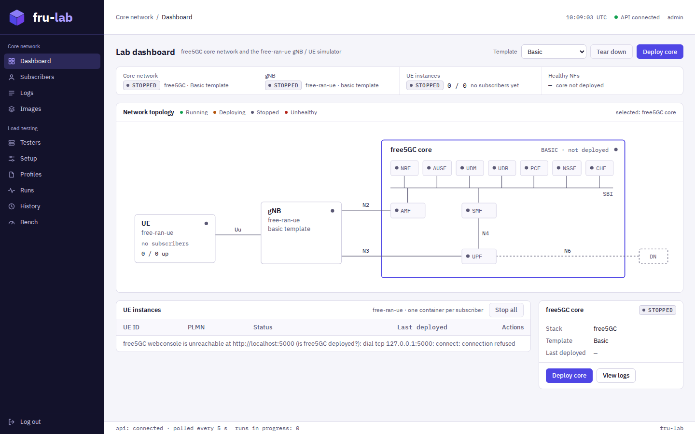
1 2 3 4- 1Core network：Dashboard、Subscribers、Logs、Images，本章用到的頁面。
- 2Load testing：Testers、Setup、Profiles、Runs、History、Bench，Part B 的壓測頁面。
- 3右上角：UTC 時間、API 狀態（
API connected或API not answering）、登入的使用者。 - 4底下的狀態列：API 狀態，以及正在跑的壓測數量。左下角是 Log out。
A2部署核網
- 選一個 Template
核網停著時，Dashboard 右上角有 Template 選單。第一次用選 Basic。
Basic
一個 UPF。最簡單，壓測也用這個。
ULCL
資料面拆成中繼 UPF 和錨點 UPF，以 N9 串起來。
ULCL (Two Slice)
兩條 ULCL，各自有 SMF、I-UPF、PSA-UPF，一個切片一條。
- 按 Deploy core
在頁首右邊（或選取核網時，右下 Selected node 面板）。狀態會從 Deploying 變成 Running。部署失敗或超過
deploy.timeout（預設 5 分鐘）會自動撤掉。1 2 3 4 5- 1Template 選單
- 2Deploy core；旁邊的 Tear down 一次停掉全部
- 3Network topology：點 UE、gNB、核網框或單一個 NF 來選取它。圓點顏色是狀態：Running、Deploying、Stopped、Unhealthy
- 4UE instances：每個 Subscriber 一列
- 5Selected node：選取的東西的詳細資料與操作按鈕
- 確認核網跑起來
上方狀態列的 Healthy NFs 會顯示幾個 NF 正常。點拓撲圖上的單一個 NF（例如 AMF）可以只看它。
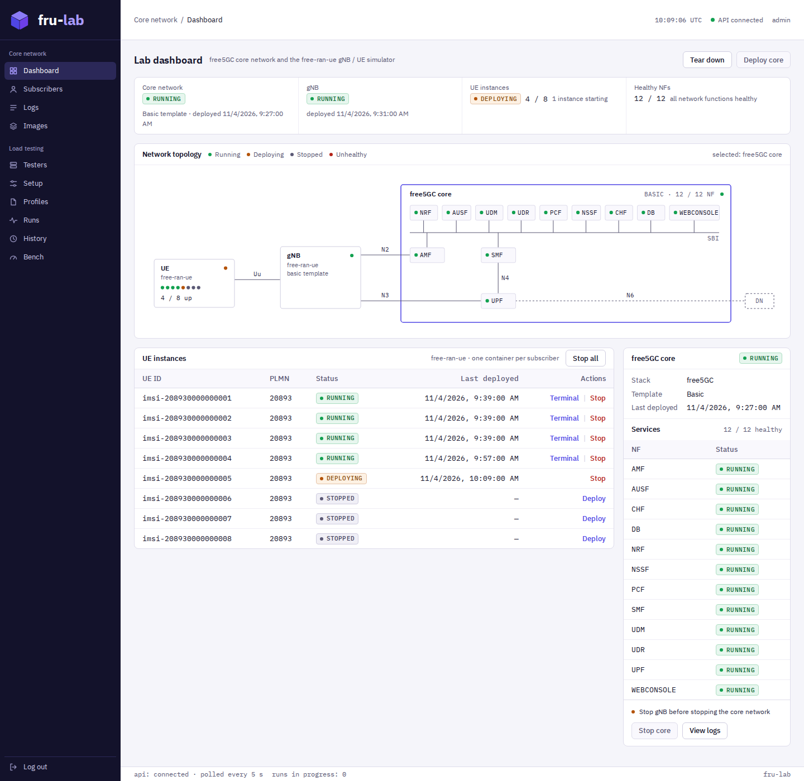
Basic 跑起來之後，拓撲上每個 NF 都是綠點，Template 名稱標在核網框右上角。
A3部署順序：核網 → gNB → UE
fru-lab 會擋住順序不對的操作。記住一句話就好：先開的後關。
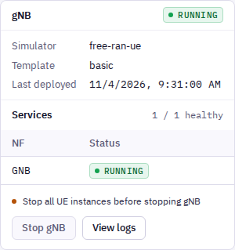
Stop all UE instances before stopping gNB。會看到的提示
Deploy the core network before deploying gNBDeploy gNB before deploying a UE instanceStop gNB before stopping the core network
任何沒完全停下的東西都能 Stop，包括卡在 Deploying 的部署。
A4加入 Subscribers
Subscriber 存在 free5GC 的 webconsole 裡，所以要先部署核網。打開側邊欄的 Subscribers。
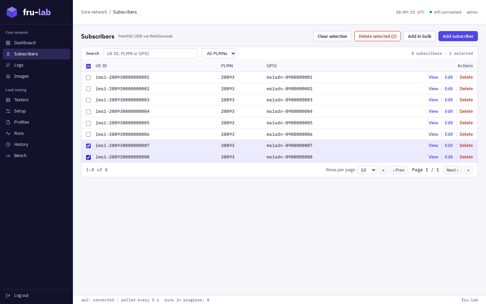
- 一次加很多個：Add in bulk
輸入要建幾個（1–10 000），按 Continue。
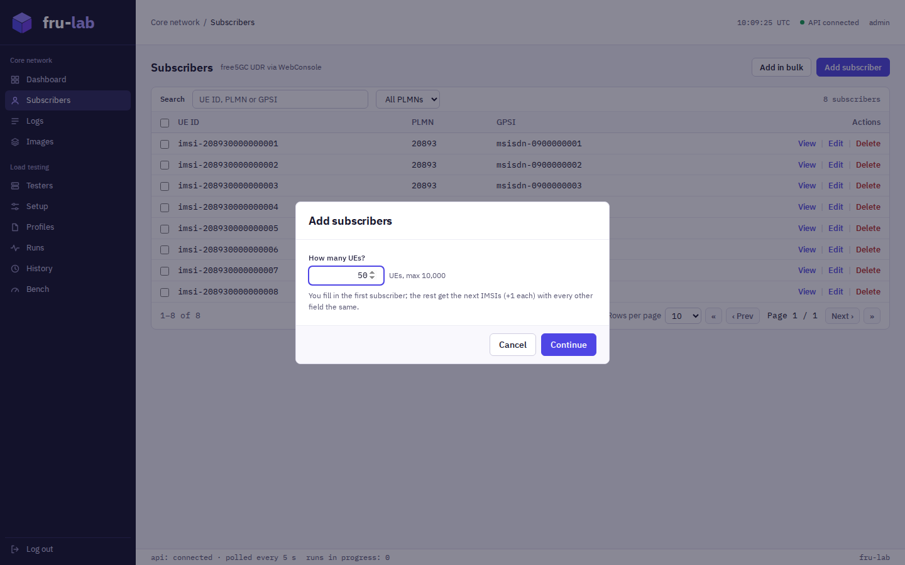
- 填第一個，其餘自動遞增
你只填第一個 Subscriber；其他的 IMSI 逐一加 1，其餘欄位都一樣。SUPI 下方會寫出整批的範圍，按鈕變成 Create N。建立失敗的會列在表單最下面。
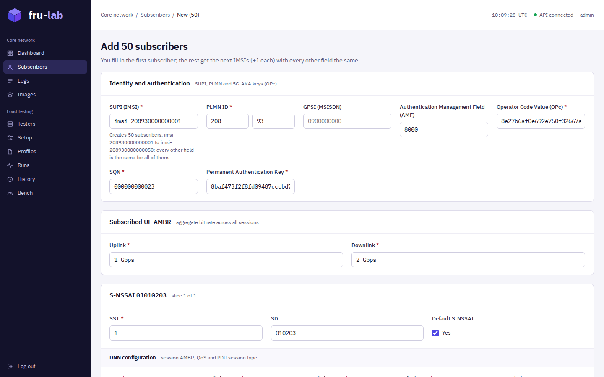
- 只加一個：Add subscriber
空白表單：身分與金鑰（SUPI、PLMN ID、GPSI、AMF、OPc、SQN、permanent key）、Subscribed UE AMBR，以及一或多個 S-NSSAI 和它的 DNN 設定。用 + S-NSSAI、+ UP security、+ Flow rule 再加，按 Create 存。
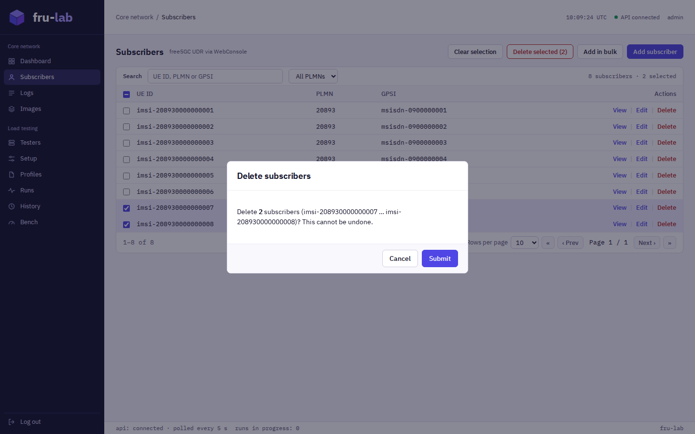
在 ULCL (Two Slice) 下，Subscriber 的 S-NSSAI SD（010203 或 112233）決定它的 UE 接到哪個切片的 gNB。
A5gNB、UE 與 Terminal
- 部署 gNB
點拓撲圖上的 gNB，在 Selected node 面板按 Deploy gNB。Two Slice 下還是一個 gNB 節點、一個按鈕，但會起兩個 gNB 容器，一個切片一個。
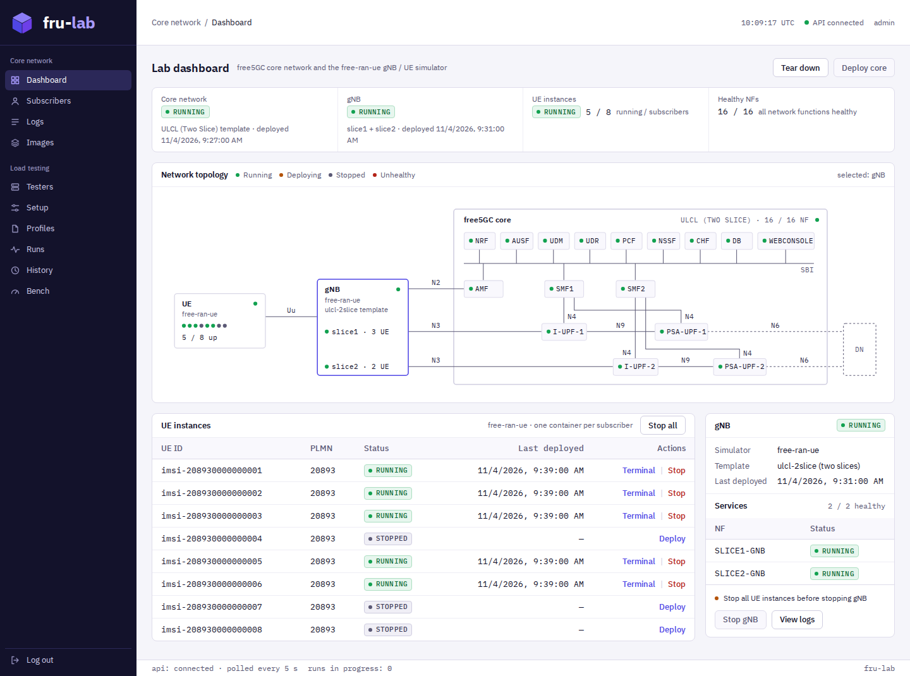
Two Slice：gNB 框列出兩個切片各有幾個 UE 上線，Services 表有 SLICE1-GNB、SLICE2-GNB。 - 部署 UE
UE instances 面板列出每個 Subscriber。每列的 Deploy 起那支 UE（一個 free-ran-ue 容器），Stop 停掉；Stop all 停掉全部。點 UE ID 選取它，右邊面板顯示 PLMN、GPSI、最後部署時間與操作按鈕。
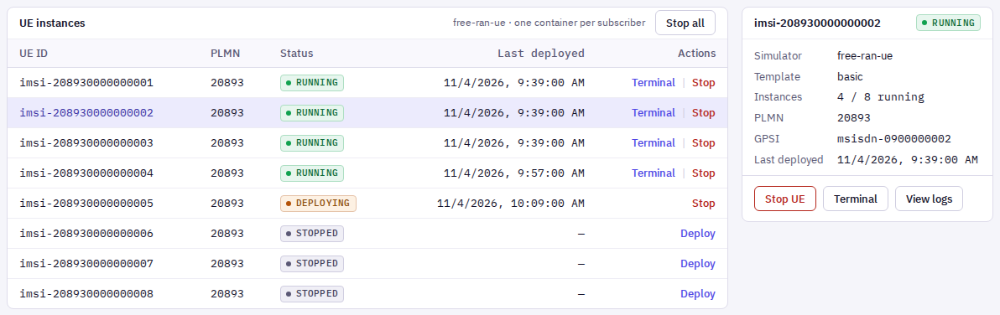
- 進 UE 的 Terminal 試上網
跑著的 UE 會出現 Terminal。打開後就在那支 UE 的容器裡，可以用它的隧道介面 ping 外面，確認整條路通了。右上角 ✕ 關閉。
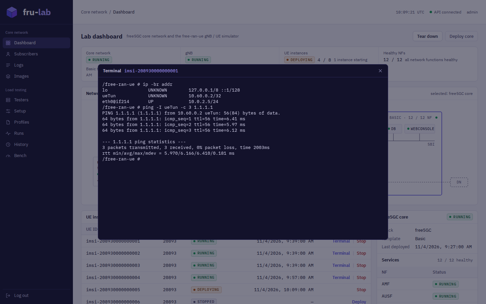
A6Logs 與 Images
Logs
- 左邊 Sources：free5GC 核網、gNB（Two Slice 時分 Slice 1、Slice 2），以及部署過的每支 UE。圓點是狀態。
- 選核網時可以看 All NFs 或單一個 NF。
- Log 是快照：按 Refresh 重抓，Download 存成
.txt。 - Dashboard 上的 View logs 直接跳到選取節點的 log。
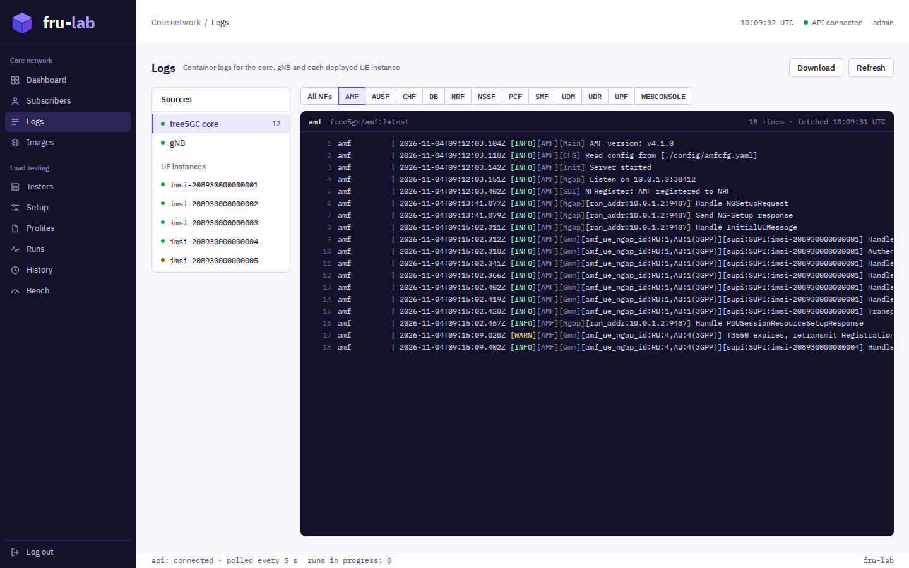
Images
- 列出 fru-lab 會用的 Docker image：free5GC 各 NF、MongoDB、webconsole，以及 gNB 和 UE 共用的 free-ran-ue。每個固定在 compose 範本用的 tag（通常
latest）。 - Pull／Update 抓那個 tag；Pull missing (N) 依序抓所有缺的。
- Clear 刪掉本機的 image，下次部署會重抓；Clear all 一次全刪。都會先確認，按 Submit 才執行。
- 容器還在用的 image 刪不掉，要先停核網、gNB 或 UE。
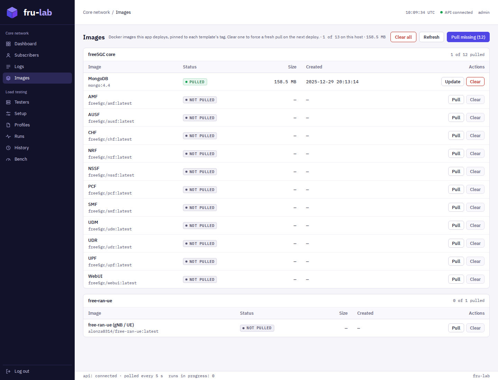
第一次壓測：用 Throughput Tester 跑一個 run
照這一章做完，你會用 fru-lab 部署的 free5GC（Part A 的 Basic）跑完一個 10 gNB、1000 UE 的測試，並看懂報告。換成別的核網時，只有網路欄位要改。
B1tester 在做什麼
一次 run 依序做這五件事。每一段在 Run 頁都有即時數字。
流量怎麼走？tester 同時扮演「gNB 那一端」和「網際網路那一端」，自己送、自己收，所以能算出 UPF 實際轉送了多少、掉了多少。
B2準備清單
開始前確認這四件事。用 Part A 的 free5GC 時，後兩項 fru-lab 已經幫你處理好。
- tester 主機載入 SCTP：
sudo modprobe sctp。開機自動載入：echo sctp | sudo tee /etc/modules-load.d/sctp.conf。 - tester 有權限：用 root 或
CAP_NET_ADMIN執行（它會在網卡上加 gNB 的 IP 和 UE 的路由）。要用 AF_XDP 引擎另外需要CAP_BPF、CAP_IPC_LOCK。Docker Compose 已經設好。 - 核網裡有這批 UE 的 Subscriber：tester 不建 Subscriber。IMSI 範圍、K、OPc、切片都要和 Setup 頁一致。Setup 頁的 gNB plan 會列出每個 gNB 的 SUPI 範圍，照著建就好。用 fru-lab 的 free5GC 時，用 Part A 的 Add in bulk 一次建 1000 個。
- free5GC 的兩個設定：SMF 的
urrThreshold要調大（fru-lab 範本是 10 GB），否則高速率時 DL 會斷；CHF 的cgf.enable要是false，否則 PDU session 會卡 10 秒後逾時。fru-lab 的範本已經這樣設；別的核網或舊版要自己改。
B3確認 tester 連上了
打開側邊欄 Load testing 的第一頁 Testers。每台 tester 一列，每 3 秒更新。
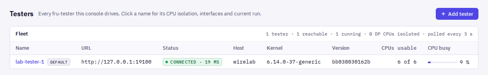
1 2 3- 1tester 名稱。
DEFAULT是config.yaml裡那台。點名稱進入它的詳細頁。 - 2狀態要是 CONNECTED，旁邊是回應時間。UNREACHABLE 時下方會寫錯誤原因。
- 3Add tester：加入別台機器上的 fru-tester（見「多台 tester」）。
點名稱進去看 Ready to run：
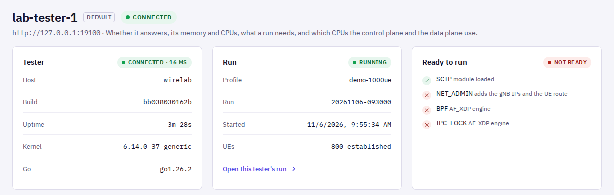
1NET_ADMIN、BPF、IPC_LOCK，結論是 NOT READY。- 1結論：AF_XDP READY 全部能用；SOCKETS ONLY 只能用一般 socket 引擎，功能都在、效能低一點；NOT READY 跑不起來，照紅叉補權限或
modprobe sctp。
B4設定並開始
打開 Setup。新設定檔的預設值就是對 fru-lab 的 Basic free5GC 寫的：10 個 gNB、1000 個 UE、每個 UE 上下行各 1 Mbps。第一次跑什麼都不用改。
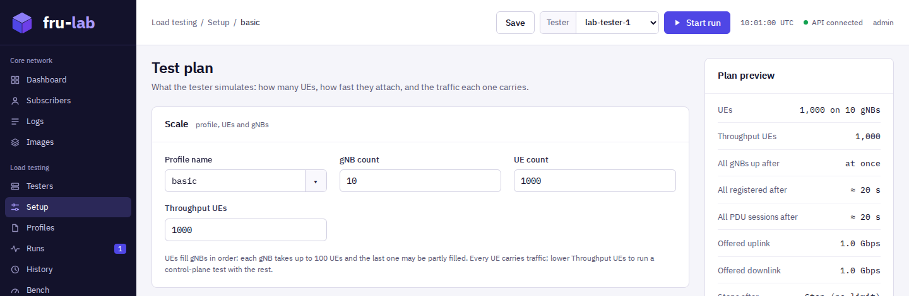
1 2 3 4 5 6- 1Profile name：設定檔名稱，▾ 可以切換到別份。
- 2gNB count、UE count：要模擬多少。UE 依序平均分到每個 gNB。
- 3Plan preview：照目前的設定估算多久全部註冊完、總流量多少。
- 4Save：存成設定檔，之後在 Profiles 頁找得到。
- 5Tester：要在哪一台 tester 上跑。
- 6Start run：先存檔再開始，直接跳到 Run 頁。
- 由上往下看一遍卡片
四組裡只有「要多少」和「打多少」是你通常會改的。「是誰」要和核網一致，「多快」先用預設，「走哪」只有換核網或換機器時才改。每個欄位的完整說明在 D · Setup 全部欄位。
- 按 Ping 確認網路
N2、N3、N6 三張卡片下方各有一顆 Ping 按鈕。它用 run 會用的位址去 ping AMF 和 UPF，不用開始 run 就知道網路通不通。三個都 Reachable 再往下。
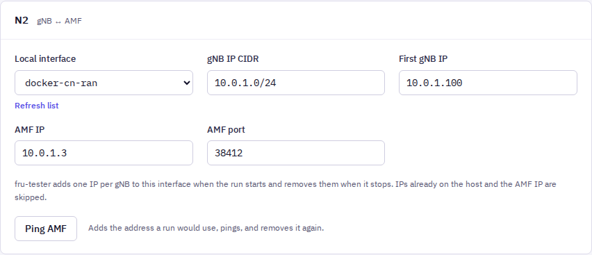
- 看右欄的 Pre-flight checks
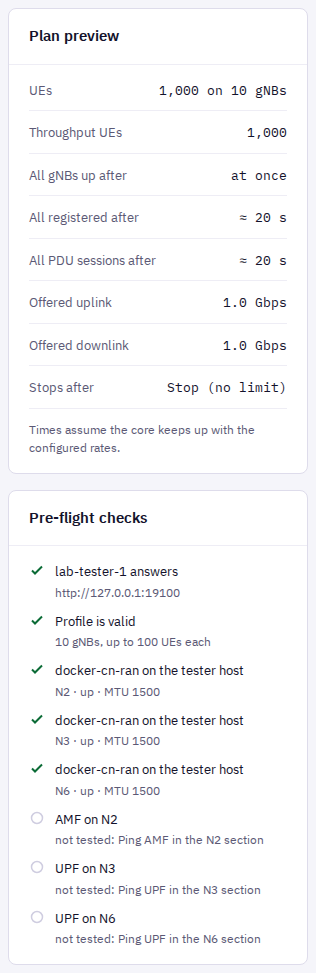
右欄怎麼看
- Plan preview：All registered after、All PDU sessions after 是照設定的速率算的；核網跟不上時實際會更久。Offered uplink／downlink 是總流量。
- Pre-flight checks：tester 有沒有回應、設定有沒有過驗證、三張網卡在不在、MTU 多少、最近一次 Ping 的結果。打勾越多越安心；
not tested表示還沒按 Ping。 - 欄位填錯時，錯誤直接寫在那個欄位下面，Start run 不能按。
- 按 Start run
fru-lab 先存設定檔，然後跳到這台 tester 的 Run 頁。一台 tester 同一時間只跑一個 run；多台可以各跑各的。
B5看 Run 頁
run 開始後，畫面每秒更新。由上往下讀：
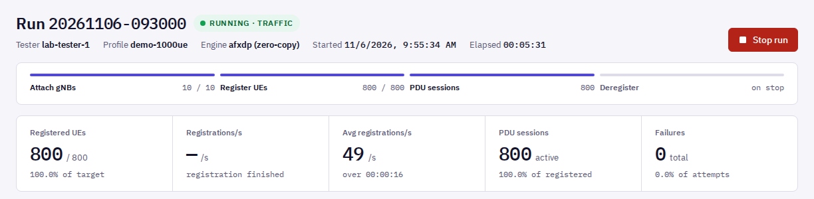
1 2 3 4 5 6 7 8- 1狀態與目前階段，例如
RUNNING · TRAFFIC。 - 2Engine：實際用的資料面引擎。看到
zero-copy是最省 CPU 的模式。 - 3Stop run：停止並收尾。收尾中變成 Skip cleanup。
- 4進度條：Attach gNBs → Register UEs → PDU sessions → Deregister。
- 5Registered UEs：已註冊／目標。
- 6Registrations/s：即時，上一秒成功幾個。註冊階段結束後顯示
registration finished。 - 7Avg registrations/s：平均，成功數 ÷ 註冊花的時間。
- 8Failures：總失敗數與佔嘗試的比例。不是 0 時往下看 Failure causes。
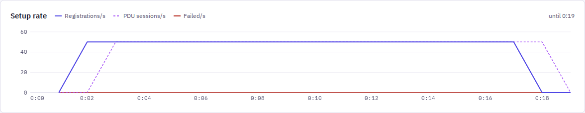
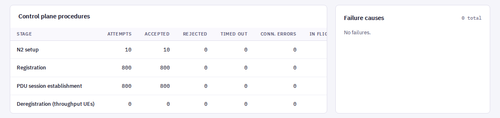
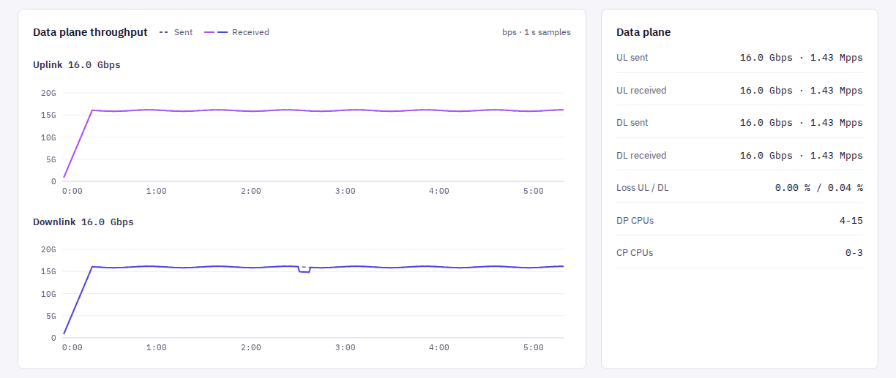
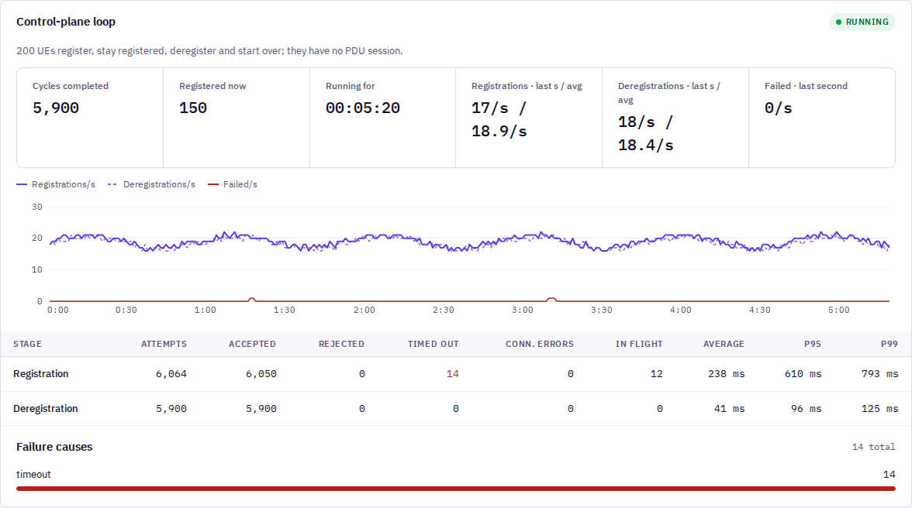
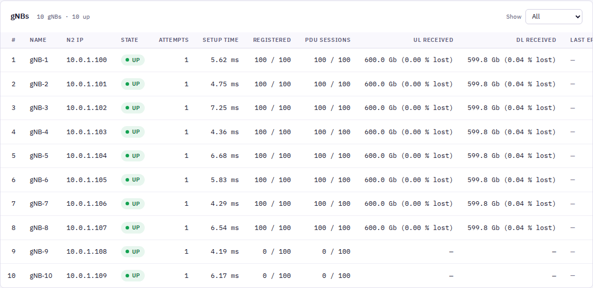
Not up 或 Failed or lost。側邊欄的 Runs 列出所有 tester 正在跑的 run（有 run 時旁邊顯示數量），點卡片進入。
B6停止與報告
- 按 Stop run
流量立刻停，接著每個 UE 登出、關掉每個 gNB 的連線、移除 tester 加的 IP 和路由。收尾期間按鈕變成 Skip cleanup：再按一次會略過剩下的登出，但連線和 IP 一樣會清掉。也可以在 Setup 的 Max run time 設定時間到自動停。
略過收尾的代價沒登出的 UE 會留在核網裡。再跑同一批 UE 時，free5GC 可能回
Duplicated PDU session ID而逾時，要重開核網。 - 到 History 找這次 run
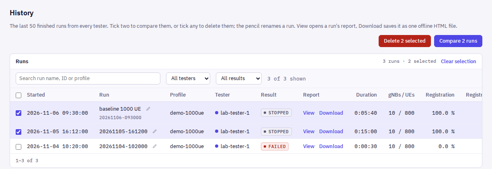
1 2 3 4 5 6- 1用名稱、run ID 或設定檔搜尋，也可以依 tester、依結果篩選。
- 2勾選要處理的 run。表頭的方框可以一次勾整頁；勾錯了按右上的 Clear selection。
- 3按鉛筆幫 run 改名，例如「baseline 1000 UE」。預設顯示日期加時間（run ID），改名後 run ID 會小字列在名字下面。輸入框按 Enter 儲存、Esc 取消；把名字清空就改回預設。
- 4View 在新分頁開報告；Download 存成一個 HTML 檔，不用連線也能開，可以直接寄給別人。
- 5Delete n selected 刪掉勾選的 run，會先跳出確認框（下圖），按 Delete 才會真的刪。刪掉的 run 連報告一起消失，無法復原。
- 6剛好勾兩筆時，按 Compare 2 runs 會並排比較同一組指標。
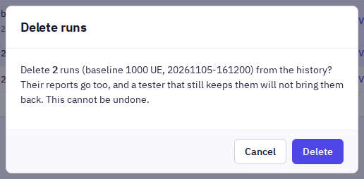
刪除前的確認框，會列出要刪的 run。按 Cancel 就什麼都不會刪。 - 讀報告
報告最上面一排數字就是結論：上下行平均收到多少、掉包率、延遲、註冊與 PDU 成功率。下面依序是吞吐圖、控制面、資料面、控制面循環、每個 gNB、UE 狀態，最後是這次用的完整設定。
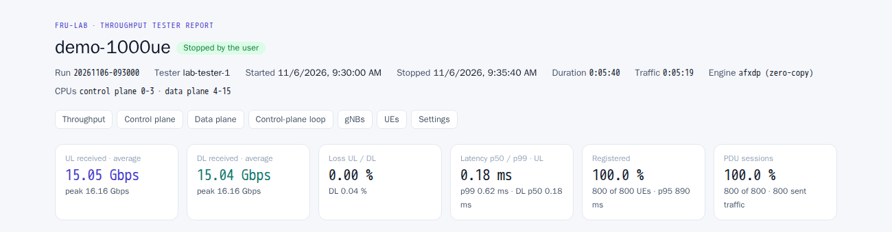
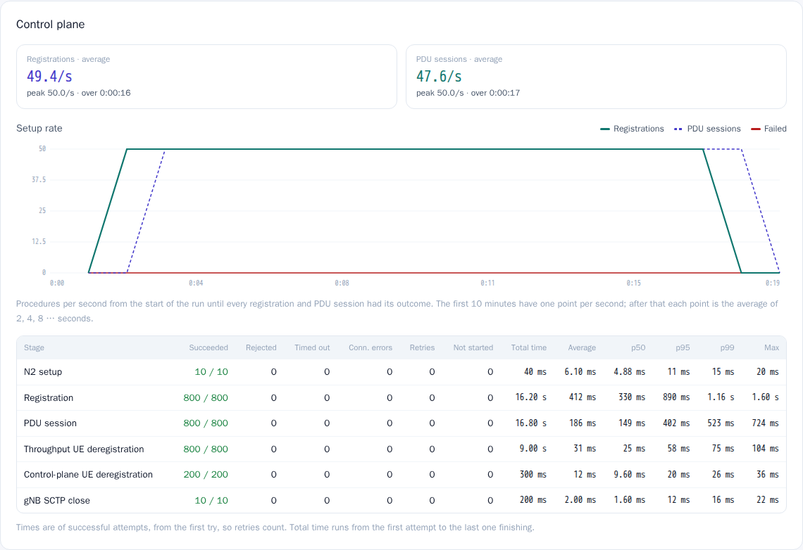
Control plane 一節：註冊與 PDU 的平均速率、Setup rate 曲線，以及每個階段的成功數和耗時分佈（平均、p50、p95、p99、最大）。
B7看懂結果：正常長什麼樣子
大部分問題看圖的形狀就認得出來。左邊是正常，右邊是要注意的樣子。
正常 送出和收到疊在一起
UPF 把送進去的都轉回來了。Loss 接近 0 %。
注意 收到的線在送出的下面
UPF 或 tester 這邊掉包了：已經到上限。降每 UE 速率、加 gNB，或看 症狀對照表 的「UL 掉包」。
正常 Setup rate 是平的高原
核網每秒處理的數量等於設定的速率，即時值和平均值差不多。
注意 高原下凹、紅線冒出來
那段時間核網變慢、開始逾時。把 Starts per second 調低，或看核網的 log。
正常 gNB 全部 up
gNBs 表頭寫的 up 數等於總數。
注意 gNB 變成 lost
原本連上的 gNB 被斷了。通常是 AMF 重啟、AMF 太忙沒回應 SCTP，或網路中斷。之後的 PDU、登出會出現 association lost。
| 你看到的數字 | 白話意思 | 好的樣子 |
|---|---|---|
| Registered UEs | 多少 UE 註冊成功 | 等於目標 |
| Registrations/s vs Avg | 這一秒的速度 vs 整段的平均速度 | 兩個差不多，且接近設定的 Starts per second |
| Rejected | 核網明確拒絕，原因碼寫在 Failure causes | 0 |
| Timed out | 核網沒在時間內回應 | 0；有的話核網太忙或網路有問題 |
| p95 | 95 % 的程序在這個時間內完成 | 比 Timeout per attempt 小很多 |
| Received（UL／DL） | 真的經過 UPF 回來的速率，就是 UPF 的轉送量 | 等於 Sent |
| Loss | 1 − 收到 ÷ 送出 | 接近 0 % |
| Misrouted | 下行從別的 UE 或別的 gNB 的通道回來 | 0；不是 0 就是 UPF 轉送錯了 |
進階：照你要量的東西調設定
跑得起來之後，下一步是決定要量什麼：UPF 能轉多少、AMF 每秒能註冊多少、核網撐不撐得住大量 gNB。這一章先講兩個最容易混淆的旋鈕，再給每種情境的起點。
C1速率與同時上限：兩個旋鈕
每個 pacing 卡片（N2、Registration、PDU session、Deregistration、Control-plane loop）都有同樣兩個欄位。把它想成餐廳門口：
核網很快時
每個請求很快就回來，等候區永遠不滿。速度由 ① 閘門 決定：Registrations/s ≈ Starts per second。
核網變慢時
每個請求要等很久，等候區滿了。速度變成約 Max in flight ÷ 每個請求的時間，比閘門設定的低。這時調高閘門沒用，只會排更長的隊。
從低的 Starts per second 開始，每次往上加，看 Setup rate 的高原。高原跟著往上走，代表核網還跟得上；高原不再升高、Timed out 開始出現、p95 明顯變大，那個速率就是核網的上限。
失敗但還有重試次數的 UE 會排回它自己 gNB 那條隊伍的隊尾。N2 的 gNBs per second 設 0 表示不限；N2 的 Max in flight 上限是 1000（0 就是 1000）。
C2照情境設定
第一次接一個新核網
先證明整條路是通的，再放大。
| 規模 | 1 gNB × 1 UE |
| 每 UE 速率 | 1 / 1 Mbps |
| 網路 | 三個 Ping 都過 |
通了以後再加到 10 × 100、10 × 1000。
量 UPF 能轉多少（同一台機器）
UE 多、每個打少，負載分得最平均。
| 規模 | 10 gNB × 1000–2000 UE |
| 每 UE 速率 | 15–30 Mbps |
| Downlink batch | 1 |
實測：96 CPU、10 × 1000 × 30 Mbps，上下行各 30 Gbps，CPU 約 90 %。tester 和 UPF 在同一台會搶 CPU，量到的是兩者合起來的上限。
量 UPF 能轉多少（兩台機器）
tester 那台不缺 CPU，可以合更多封包。
| 規模 | 20 gNB × 800 UE |
| 每 UE 速率 | 50 / 50 Mbps |
| Downlink batch | 2 |
| Engine | auto，要看到 zero-copy |
網路接法見 兩台機器。
壓 AMF 的註冊能力
只做控制面，不打流量。
| Throughput UEs | 0（全部做 CP 循環） |
| Control-plane loop | 從 50/s 往上加 |
| Stay registered | 0–1000 ms |
Throughput UEs 設成小於 UE count，前面那些打流量、其餘的不斷「註冊 → 停留 → 登出」。看 Control-plane loop 面板的 Registrations · last s / avg 和 Failed。
- DL 要更高就加 gNB：socket 引擎下每個 gNB 的 DL 只有一條收包線，約 2–3 Gbps。
- 每個 UE 單一方向不要超過約 3 Gbps：UPF（gtp5g）處理單一 UE 只用一顆核心。
- 封包大一點比較省：成本幾乎只看每秒幾個封包，同樣 CPU 下 1400 bytes 比 64 bytes 打出多很多 Gbps。
- 收 UDP 的網卡要依 port 分流：
ethtool -N <網卡> rx-flow-hash udp4 sdfn。跑的時候在 UPF 那台mpstat -P ALL 1，只有少數核心滿載就是分流或連線數不夠。
C3網路架構：同一台還是兩台
同一台 fru-lab 預設
- Setup 頁預設值直接能跑。
- 封包經 veth 進 UPF 容器，大部分處理在 tester 送封包的那顆 CPU 上做，量到的是「兩者合起來」的上限。
兩台 量 UPF 上限時建議
- 量到的是 UPF 自己的上限；tester 的發送端幾乎不會是瓶頸（Bench：一條發送線 19–41 Gbps）。
- 要同一個 L2、同一個 subnet、網卡依 port 分流。
同一台機器、5GC 用 k8s macvlan 時 工程
5GC 在 k8s，N2/N3/N6 是綁在本機網卡（例如 enp1s0）上的 macvlan。tester 也在這台時，先記住一條規則：
同一張網卡上，macvlan 和 macvlan 之間互通；網卡本身和它上面的 macvlan 之間不通。macvlan 之間的封包由 kernel 直接轉交，網卡本身送出的封包直接上線路，收不回來。
| tester 用哪張介面 | 通嗎 | 資料面 |
|---|---|---|
enp1s0 本身 | 不通 | — |
enp1s0 上另開的 macvlan | 通 | 只有 socket 或 generic XDP，tester 和 UPF 搶 CPU，適合驗證功能 |
enp1s0 切出來的 VF（SR-IOV） | 通 | AF_XDP zero-copy，要全效能用這個 |
另一個實體 port 拉線接到 enp1s0，或另一台機器 | 通 | AF_XDP zero-copy |
另開 macvlan（docker 版；helm 的 macvlan 模式會自動做）：
sudo ip link add tester-n3 link enp1s0 type macvlan mode bridge
sudo ip link set tester-n3 up # N2、N6 同理；Setup 頁的介面選 tester-n3切 VF：VF 是網卡硬體切出來的網卡，和 5GC 的封包由網卡硬體互轉，所以能通，也能 zero-copy。
cat /sys/class/net/enp1s0/device/sriov_totalvfs # 0 = 不支援，只能拉線或用兩台 echo 1 | sudo tee /sys/class/net/enp1s0/device/sriov_numvfs ip -br link # 多出來的那張就是 VF；重開機後要重切
- Setup 頁的 N3、N6 選 VF，Data plane engine 用
auto，Run 頁的 Engine 出現zero-copy就成功了。docker 版和 helm 版（tester.network.mode: host）都能 zero-copy。 - 不要在 macvlan 上強制
afxdp：generic XDP 每個封包多複製一次，通常比 socket 慢。 - 只用 macvlan 時要拉高流量：多開幾個 gNB、封包大一點、Testers 頁的資料面 CPU 不要和 UPF 的 CPU 重疊。
C4兩台機器：B 主機接到 A 主機的 k8s 5GC
例子：A 主機用 k8s 跑 5GC，N2、N3、N6 是綁在實體網卡上的 macvlan；B 主機跑 fru-tester，三個網口用線直接接到 A。先填你 B 主機的值，下面的指令會跟著換。
預設值只是範例。網卡名稱用 ip -br link 查，UE pool 看 SMF 設定（free5GC 是 smfcfg.yaml 的 pools）。下面的 IP 以這組為例：AMF N2 172.22.49.140、UPF N3 172.23.49.140、UPF N6 172.26.49.140，三個網段都是 /16；gNB 從 172.22.6.1、172.23.6.1 開始，sink 是 172.26.6.1/16。
- 找出 B 的哪張網卡接到哪個網路
每張網卡暫時加一個 IP、ping 對面的 pod，通了就知道是哪個網路，再拿掉。用
.6.250這種不會和 gNB 撞到的 IP。網卡對應好、Setup 頁填好之後，也可以直接用卡片下的 Ping 按鈕確認。在 B 上ip -br link # LOWER_UP 代表線有接上 sudo ip link set ens2f0 up sudo ip addr add 172.22.6.250/16 dev ens2f0 ping -c 3 -I ens2f0 172.22.49.140 sudo ip addr del 172.22.6.250/16 dev ens2f0 sudo ip link set ens2f1 up sudo ip addr add 172.23.6.250/16 dev ens2f1 ping -c 3 -I ens2f1 172.23.49.140 sudo ip addr del 172.23.6.250/16 dev ens2f1 sudo ip link set ens2f2 up sudo ip addr add 172.26.6.250/16 dev ens2f2 ping -c 3 -I ens2f2 172.26.49.140 sudo ip addr del 172.26.6.250/16 dev ens2f2
- B 主機的準備
在 B 上
sudo modprobe sctp echo sctp | sudo tee /etc/modules-load.d/sctp.conf # 三張網卡只要 up，不用加 IP：run 開始時 tester 會用 CIDR 的遮罩加 gNB IP， # sink 也照 Setup 頁填的遮罩（172.26.6.1/16）加到 N6 網卡上，結束時移除 sudo ip link set ens2f0 up sudo ip link set ens2f1 up sudo ip link set ens2f2 up # UDP 依 port 分流（只有 IP SA / IP DA 時才要改），兩台的 N3、N6 都要 ethtool -n ens2f1 rx-flow-hash udp4 sudo ethtool -N ens2f1 rx-flow-hash udp4 sdfn
Sink IP 要帶遮罩Setup 頁填
172.26.6.1/16，tester 加到 N6 網卡上時用同一個遮罩，主機才有到 172.26.0.0/16 的路由，「UE pool 經由 172.26.49.140」這條路由才加得上去。遮罩要涵蓋 UPF 的 N6 IP。三張網卡上不要預先放 172.22.6.x、172.23.6.x、172.26.6.1，否則 tester 會跳過這些 IP。 - 核網那一邊要確認的事
在 A 上（kubectl）
# UPF 要能把 UL 送到 sink、把 DL 送到 gNB：都應該走對應的 macvlan 介面 kubectl exec -n <namespace> <upf-pod> -- ip route get 172.26.6.1 kubectl exec -n <namespace> <upf-pod> -- ip route get 172.23.6.1 # AMF 要在 N2 IP 上收 SCTP（free5GC：amfcfg.yaml 的 ngapIpList） kubectl exec -n <namespace> <amf-pod> -- cat /free5gc/config/amfcfg.yaml | grep -A3 ngapIpList
- tester 的 UE pool 要和 SMF 發給 UE 的範圍一樣（
10.60.0.0/16）；SMF 給的 UPF N3 位址要是172.23.49.140。 - A 是 VM 的話，虛擬交換器要允許一個 port 有多個 MAC（例如 VMware 的 promiscuous mode 和 forged transmits）；第 1 步 ping 得通就代表沒問題。
- A 的 macvlan IPAM 不能發出 172.22.6.x、172.23.6.x：tester 看不到 pod 的 IP，撞到不會被擋。
- tester 的 UE pool 要和 SMF 發給 UE 的範圍一樣（
- Setup 頁的網路欄位
欄位 填 N2 Local interface ens2f0 gNB IP CIDR / First gNB IP 172.22.0.0/16 / 172.22.6.1 AMF IP / AMF port 172.22.49.140 / 38412 N3 Local interface ens2f1 gNB IP CIDR / First gNB IP 172.23.0.0/16 / 172.23.6.1 UPF IP / UPF port 172.23.49.140 / 2152 N6 Local interface ens2f2 Sink IP (CIDR) / UPF N6 IP 172.26.6.1/16 / 172.26.49.140 UE IP pool 10.60.0.0/16 - 第一次跑：先最小規模
先 1 gNB、1 UE、UL/DL 各 1 Mbps。run 進行中可以在 B 上確認：
ip -br addr show ens2f0 # tester 加的 gNB IP ip route get 10.60.0.1 # 要 via 172.26.49.140 dev N6 網卡 sudo tcpdump -ni ens2f0 sctp -c 5 sudo tcpdump -ni ens2f1 udp port 2152 -c 5 sudo tcpdump -ni ens2f2 udp port 9200 -c 5
- 固定下來（重開機後還在）
在 B 上：/etc/netplan/60-tester.yaml，再 sudo chmod 600 該檔、sudo netplan apply（只讓網卡開機時 up；IP 都由 tester 在 run 期間加）
network: version: 2 ethernets: ens2f0: dhcp4: false ens2f1: dhcp4: false ens2f2: dhcp4: false
C5多台 tester 與 CPU 分配
- 在另一台機器只部署 fru-tester
它
tester.yaml的listen要是 fru-lab 連得到的位址，testerName是介面上顯示的名稱（沒設時用主機名稱）。 - Testers 頁按 Add tester
填 URL（例如
http://10.0.0.2:9100）和 API token（它的apiToken），按 Add。fru-lab 會先請那台回報狀態；連不到、token 不對或已經在列表上都不會加入，並說明原因。加入後重啟也還在。 - 在 Setup 的 Tester 選單選它
Runs 列出每台正在跑的 run；History 收每台的 run 並標出是哪一台；Bench 可以選任一台量。手動加入的 tester 在 Actions 欄有 Remove；預設 tester（
config.yaml那台）不能從頁面移除。
同一台機器跑多台 tester、共用同一張網卡
- 每台 tester 的 gNB 起始 IP（N2、N3 的 Start IP）要錯開，IP 範圍不能重疊；重疊時後開始的那台會因為 IP 已存在而失敗。
- sink IP 和 UE pool 路由可以共用。每台 tester 會登記自己正在用的 sink IP 和路由，只有最後一台停下的才會把它們刪掉；其他 tester 停下時只刪自己加的 gNB IP。登記用的是 host 網路裡的 abstract unix socket，tester 當掉時登記會自動消失。
- run 開始前，fru-tester 會在 N2、N3、N6 網卡上打開
net.ipv4.conf.<網卡>.promote_secondaries，之後不會關回去。這個設定關著時，刪掉一個網段的第一個 IP（primary），kernel 會把同網段的其他 IP 全部一起刪掉，連別台 tester 的也會被刪。fru-tester 是用 netlink 設定的，在 container 裡只要有 NET_ADMIN 就能設；設不成功時，run 會直接失敗並說明原因。 - 共用 sink IP 時，流量的 Port 要錯開。socket 引擎的 sink 開了
SO_REUSEPORT，同一個 IP 和 port 會讓 kernel 把封包分給兩台 tester，結果會顯示成掉包。 - AF_XDP 一張網卡同時只能掛一個 XDP 程式。第二台 tester 在同一張網卡用 AF_XDP 會掛不上：
auto會改用 socket 並寫出原因，指定afxdp則會失敗。
CPU 分配決定 tester 主機上哪些 CPU 給控制面（CP：N2、註冊、PDU）、哪些給資料面（DP：收送封包）。在單台 tester 頁設定，run 開始前設好，run 進行中不能改。
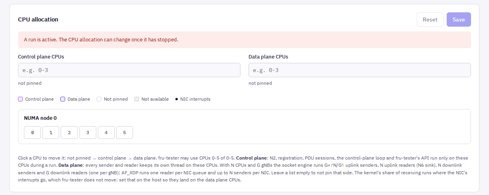
0-3、4-15。它讓 CP 和 DP 互不搶 CPU、結果比較穩、比較好解讀。kernel 收包的那一份跑在網卡中斷所在的 CPU，fru-tester 不會去改中斷設定，要自己把 N3、N6 網卡的中斷設到資料面 CPU。
CPU 分配的完整說明與資料面執行緒數 工程
- 格式是 Linux 的 CPU 清單：
0-3,8,10-11。留空表示那一邊不綁核。兩邊不能重疊，CPU 必須是 fru-tester 能用的（在 container 裡就是它的 cpuset）。 - 依 NUMA node 列出每顆 CPU。圖例：Control plane、Data plane、Not pinned、Not available、NIC interrupts（網卡中斷所在的 CPU 有小點）。資料面 CPU 跨了 NUMA node，或沒有網卡在這些 CPU 的鄰近位置時會提醒。
- CPU usage：整台主機每顆 CPU 的使用率，每秒更新，顏色從綠經黃到紅。所有程式和 kernel 的中斷處理都算在內。可以用來確認資料面 CPU 是否吃滿、網卡中斷的 CPU 是否被 softirq 塞滿。
- Network interfaces：只列實體網卡（AF_XDP 能用的），欄位是 Name、Driver、NUMA node、Local CPUs、RX queues、Interrupt CPUs。VM 的虛擬網卡通常沒有 NUMA 和中斷 CPU 資訊。
- 中斷設定：用驅動附的
set_irq_affinity腳本，或調/proc/irq/*/smp_affinity_list，並關掉 irqbalance，最好和網卡同一個 NUMA node。要讓其他程式也不碰資料面 CPU，用 kernel 參數isolcpus之類的方式。同一台跑 5GC 時，UPF 的處理會跟著 tester 送包的 CPU 跑，綁住資料面也等於限制了 UPF。 - 設定存在 tester 主機的檔案（
tester.yaml的systemFile，預設是設定檔旁的tester-system.json；Docker 是data/tester-system.json，compose 掛到./frutester-data）。
資料面開幾條執行緒（N = Data plane CPUs 的數量，沒設時是 fru-tester 能用的 CPU 數；G = gNB 數）：
| 方向 | 角色 | socket 模式 | AF_XDP 模式 |
|---|---|---|---|
| UL | 發送（gNB 往 N3 送） | 每個 gNB ⌈N/G⌉ 條，共 G × ⌈N/G⌉，各自一個 socket 綁在該 gNB 的 N3 IP | min(N3 網卡佇列數, N) |
| UL | 接收（N6 sink） | N 條，用 SO_REUSEPORT 共用 sink 位址，kernel 依 flow 分配 | N6 網卡每個佇列一條 |
| DL | 發送（N6 往 UPF 送） | N 條，各自一個 socket 綁在 sink IP | min(N6 網卡佇列數, N) |
| DL | 接收（N3 上的 gNB） | 每個 gNB 一條，共 G 條，和 N 無關 | N3 網卡每個佇列一條 |
例：20 個 gNB、資料面 24 顆 CPU 的 socket 模式：UL 發送 40、UL 接收 24、DL 發送 24、DL 接收 20，共 108 條。N 取 G 的倍數，UL 發送才不會被往上取整。socket 模式下同一個 gNB 的 DL 兩端 port 都是 2152，會進網卡同一個佇列，所以 DL 收包最多分散到 G 顆 CPU；要更多並行就加 gNB。
工程參考
每個欄位、每個數字的精確定義。新手不必讀完，需要時點開對應的區塊。
D1Setup 全部欄位
「範圍／預設」的預設是新設定檔的初始值（對應 fru-lab 的 basic free5GC 範本）。欄位有問題時，錯誤訊息直接顯示在該欄位下面。
設定檔：存檔、切換、選 tester
設定檔名稱不能重複，比對時不分大小寫、忽略前後空白（Basic 和 basic 算同一個）。
| 在哪裡 | 做什麼 |
|---|---|
| Scale 卡片的 Profile name | 直接輸入就是命名或改名。按右邊的 ▾ 打開選單：選一份已存的設定檔就換成它；+ New profile 從預設值開始一份新的。有還沒存的修改時，切換前會先問要不要丟掉。名稱和別份重複時，欄位下面直接標紅。 |
| 頁首的 UNSAVED | 這份還沒存過（New profile, not saved yet），或和上次存的不一樣（Unsaved changes）。還沒存過時頁首多一個 Cancel：放棄這份新設定檔，回到之前打開的那一份（沒有的話回到 Profiles 頁）。 |
| Save | 新設定檔直接存成新的。已存過的跳出 Save profile：Update current profile（覆蓋，名稱有改就一起改名）或 Save as new（另存一份）。另存時名稱已被用了，會跳出 Name the new profile，預設建議 原名 copy。 |
| Tester 選單 | 這份設定檔在哪一台 tester 上跑，和設定檔一起存。連不到的標 (unreachable)。介面選單、Ping、驗證、Start run 都是對所選的那台做。沒存過 tester 的設定檔當成預設 tester。tester 被移除時顯示 Removed tester，Start run 不能按。 |
| Start run | 先存再開始：已存過的有修改就更新；新的就存成新的（名稱重複時先請你重新命名，按鈕是 Save and start）。開始後跳到 /tester/run/<tester id>。驗證沒過時不能按。 |
| Profiles 頁 | 列出所有設定檔：Name、Tester、Engine、gNBs / UEs、UL / DL per UE、Packet UL / DL、Updated、Actions。可依名稱搜尋、依 tester 篩選；New profile、Open in Setup、Delete、勾選後 Delete selected (n)。刪掉的設定檔不影響 History：每個 run 都留著它當時的設定。Setup 頁會記得這個瀏覽器上次打開哪一份，Profiles 頁在那一列標 open in Setup。 |
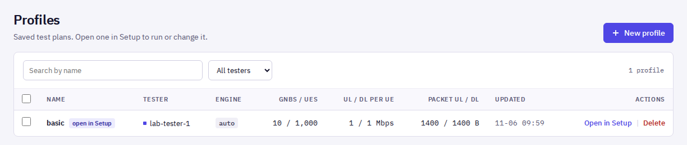
Scale
| 欄位 | 範圍／預設 | 意思 | 調高 | 調低 |
|---|---|---|---|---|
| Profile namename | 不可空白／basic | 設定檔名稱，不能和別份重複；History 會顯示。也是切換設定檔的選單。 | — | — |
| gNB countscale.gnbCount | ≥ 1／10 | 模擬幾個 gNB。每個 gNB 一條 SCTP、一個 N2 IP、一個 N3 IP。 | AMF 要處理更多 NG Setup；要更多 IP。每個 gNB 分到的 DL 變少，DL 收包分得更開；同時在跑的程序也分散到更多 SCTP。 | socket 模式下每個 gNB 的 DL 是一條連線，只能由一條讀取線、一顆核心收，約 2–3 Gbps。 |
| UE countscale.ueCount | ≥ 1／1000 | UE 總數。依序填滿 gNB，每個 gNB 容量 = ⌈UE 數 ÷ gNB 數⌉，最後一個可能沒滿。 | 同樣總量下每個 UE 打得少，負載更平均；但註冊、PDU 要更久，核網裡 session 也更多。 | 要達到同樣總量，每個 UE 得打更大。單一 UE 在 UPF 只用一顆核心（約 3 Gbps）。 |
| Throughput UEsscale.throughputUeCount | 0 到 UE 數／等於 UE 數 | 前面這麼多個 UE 建 PDU、打流量；其餘的做控制面測試（CP）：不建 PDU，等所有打流量的 UE 都有結果後，不斷「註冊 → 停留 → Dereg」直到 Stop。UE 依序填滿 gNB，所以 CP 的 UE 集中在後面的 gNB。總流量 = 這個數字 × 每 UE 速率。 | 打流量的 UE 變多；CP 負載變小。 | 打流量的 UE 變少，CP 的 UE 變多；設 0 就只做控制面測試。 |
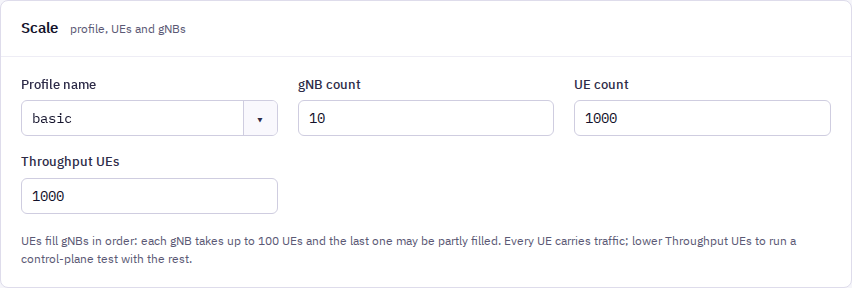
gNB template 與 UE template
不影響效能，但必須和核網一致，否則 NG Setup 或註冊會失敗。
| 欄位 | 範圍／預設 | 意思 | 注意 |
|---|---|---|---|
| gNB template | |||
| First gNB ID (hex)gnb.gnbIdStart | 6 或 8 位 hex／000314 | 第一個 gNB 的 ID，之後每個加 1。 | 不可和核網上其他 gNB 重複。gNB 數加上去超出位數時驗證會擋下。 |
| Name patterngnb.namePattern | 要有 {i}／gNB-{i} | gNB 名稱，{i} 換成 1、2、3… | 只用在顯示和 NG Setup 的 RAN node name。 |
| MCC / MNCgnb.mcc / gnb.mnc | 3 位／2–3 位；208 / 93 | PLMN。UE 也用這組。 | MCC + MNC + MSIN 必須剛好 15 位。 |
| TAC (hex)gnb.tac | 6 位 hex／000001 | gNB 宣告的追蹤區。 | AMF 要支援這個 TA。 |
| SST / SDgnb.sst / gnb.sd | 0–255；SD 空白或 6 位 hex／1 / 010203 | gNB 宣告支援的切片。 | UE 要求的切片不在其中，AMF 回 5gmm(62)。 |
| UE template | |||
| First MSINue.msinStart | 十進位／0000000001 | 第一個 UE 的 MSIN，之後每個加 1、保持位數。SUPI = imsi- + MCC + MNC + MSIN。 | 卡片下方寫出整批 SUPI 的範圍；gNB plan 列出每個 gNB 的範圍。 |
| Key (K) / OPcue.key / ue.opc | 32 位 hex | 認證金鑰。 | 和訂閱資料不同，該 UE 註冊失敗。 |
| AMF / SQNue.amf / ue.sqn | 4 位／12 位 hex；8000 / 000000000023 | 認證用的 AMF 欄位與序號。 | tester 不檢查 SQN 的新鮮度，同一批 UE 重跑不需要重新同步。 |
| Integrity / Cipheringue.integrity / ue.ciphering | nia0–3／nea0–3；nia2 / nea0 | UE 支援的 NAS 完整性與加密演算法。 | nea0 不加密，最省 CPU。 |
| DNNue.dnn | 不可空白／internet | PDU session 要的 DNN。 | SMF 要有這個 DNN 和對應的 UE pool。 |
| SST / SDue.sst / ue.sd | 同 gNB／1 / 010203 | UE 要求的切片。 | 要在 gNB 宣告的切片裡，也要在訂閱資料裡。 |
Pacing：N2、註冊、PDU、Deregistration、CP 迴圈
概念見 C1。Registration、PDU session、Deregistration 和 Control-plane loop 的排隊是每個 gNB 一條、輪流各取一個 UE，所以同時在跑的程序分散在很多條 SCTP 上。晚上線的 gNB 會在下一輪加入。
| 欄位 | 範圍／預設 | 意思 | 調高 | 調低 |
|---|---|---|---|---|
| N2 setup pacing（SCTP and NG Setup per gNB） | ||||
| gNBs per secondrates.n2.ratePerSec | 0–100000／0 | 每秒最多讓幾個 gNB 開始建 SCTP 與 NG Setup。0 是不限。重試也照這個速率排。 | gNB 更快上線，UE 更早開始註冊；AMF 同時收到的 NG Setup 更多。 | AMF 壓力平均；gNB 很多時全部上線要更久，Plan preview 的 All gNBs up after 會算出時間。 |
| Max in flightrates.n2.maxInFlight | 0–1000／0 | 同時最多幾個 gNB 在建連線。上限 1000，0 就是 1000。建連線時每個 gNB 佔一條系統執行緒；連上之後就不佔，所以上萬個 gNB 可以同時保持連線。 | AMF 慢時也能維持速率。 | AMF 慢時實際速率低於 gNBs per second。 |
| Timeout per attempt (ms)rates.n2.timeoutMs | 1–60000／5000 | 一個 gNB 的 SCTP 連線加 NG Setup 最多等多久。 | 慢的 AMF 也能成功；連不上時要等更久才失敗。 | 更快判定失敗、進入重試。 |
| Retriesrates.n2.retries | ≥ 0／1 | 失敗後再試幾次，排回隊尾。 | 暫時性問題補得回來。 | 失敗就放棄，它的 UE 記為 gNB down。 |
| Registration／PDU session／Deregistration pacing（預設 50、200、10000 ms（Dereg 5000）、1） | ||||
| Starts per secondrates.*.ratePerSec | 1–100000 | 每秒最多開始幾個新的嘗試。 | 整批更快，核網壓力更大，可能開始逾時。 | 核網比較輕鬆，整批要更久。 |
| Max in flightrates.*.maxInFlight | 1–100000 | 同時最多幾個嘗試在等核網回應。 | 核網慢時也能維持吞吐；同時等的太多，逾時跟著變多。 | 核網慢時速度跟著掉，但比較不會壓垮核網。 |
| Timeout per attempt (ms)rates.*.timeoutMs | 1–60000 | 單一程序最多等多久。 | 慢的核網也算成功；卡住的嘗試佔住名額更久。 | 更早判定失敗、進入重試。 |
| Retriesrates.*.retries | ≥ 0 | 失敗後再試幾次，排回它 gNB 的隊尾。核網明確拒絕 Dereg 時不重試。只用在打流量的 UE（以及 Stop 後的 Dereg），CP 迴圈不重試。 | 暫時性失敗補得回來，總時間變長。 | 失敗率直接反映核網第一次的表現。 |
| Control-plane loop（沒有 CP UE 時卡片標 off；預設 50、200、10000 ms、1000 ms） | ||||
| Registrations per secondrates.cpLoop.ratePerSec | 1–100000 | CP 迴圈每秒最多開始幾次註冊，和 Registration pacing 分開計算。 | AMF、AUSF、UDM 壓力更大。 | 信令負載變輕。 |
| Max UEs in a cyclerates.cpLoop.maxInFlight | 1–100000 | 同時最多幾個 CP UE 在一個循環裡（註冊中、停留中、Dereg 中都算）。 | 核網慢或停留長時仍維持速率。 | 實際速率約是這個數字 ÷ 每個循環的時間。 |
| Timeout per procedure (ms)rates.cpLoop.timeoutMs | 1–60000 | 註冊、Dereg 各自最多等多久。 | 慢的核網也算成功。 | 更早判定逾時。 |
| Stay registered (ms)rates.cpLoop.holdMs | 0–3600000 | 註冊成功後停留多久才 Dereg。 | 同時註冊著的 UE 變多，每秒循環數變少。 | 循環變快；0 = 註冊完立刻 Dereg。 |
CP 迴圈每一輪都是全新的初始註冊（完整認證）；失敗只計數與記原因，那個 UE 之後再試。
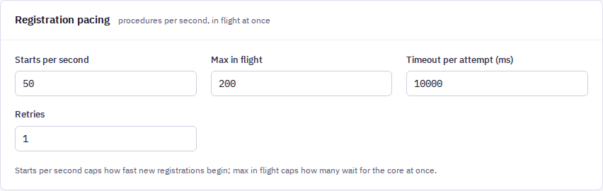
Traffic per UE 與資料面引擎
速率都是每個 UE，不是總量；卡片下方會算出整個 run 的總 bps 與 pps。
| 欄位 | 範圍／預設 | 意思 | 調高 | 調低 |
|---|---|---|---|---|
| Uplink / Downlink (Mbps)traffic.ulMbps / dlMbps | 0–10000，0 = 關／1 / 1 | 每個打流量的 UE 每個方向的固定速率。 | 總量變大；DL 一次合得更多。單一 UE 超過約 3 Gbps 會先卡在 UPF 的單一核心。 | 同樣總量要更多 UE。 |
| Packet size (bytes, inner IP)traffic.ulPacketSize / dlPacketSize | 64 到 N3 MTU − 44（1500 MTU 時 1456），最大 9000／1400 | 上行、下行各自的內層 IP 封包長度。N3 上每個 UL 封包再多 36 bytes，DL 由 gtp5g 再多 8 bytes。 | 同樣 CPU 打出越多 Gbps。超過 MTU 時驗證會擋下。 | 同樣 Gbps 要更多封包；適合測 UPF 處理小封包的能力。 |
| Data plane enginetraffic.engine | auto／socket／afxdp，預設 auto | socket：一般 UDP socket（GSO／GRO），任何環境都能跑。afxdp：在 N3、N6 網卡掛一個小的 XDP 程式，只把 gNB N3 IP:2152 與 sink:port 的 UDP 交給 tester，其他（SCTP、ARP、ping）照常給 kernel；驅動支援時零複製（i40e、ice、mlx5、ixgbe 等），不支援時改用複製或通用模式；開不起來時 run 失敗。auto：N3、N6 都是實體網卡才用 AF_XDP；其中一張不是（bridge、veth、macvlan、bond、lo）或開不起來就改用 socket。 | AF_XDP 零複製時同樣流量用的 CPU 少很多。 | socket 每個封包都走一次 kernel 堆疊；同一台、走 Docker bridge 時用它就好。 |
| UDP porttraffic.port | 1–65535／9200 | sink 和 UE 用的 UDP port。 | 和主機上其他程式衝突時才需要改。 | |
| Max run time (min)traffic.maxDurationMin | 0–10080／0 | 開始後多久自動 Stop，流程和按 Stop 一樣。0 = 不限。 | 長時間 run 的圖會自動壓縮。 | |
| Downlink batch (ms per UE)traffic.dlBatchMs | 0–10／1 | 每個 UE 連續送這麼多時間量的 DL 封包，讓 kernel 用一次 UDP GSO 送出。UL 不需要：同一個 gNB 的 UL 都送往 UPF，本來就會合併。 | tester 送 DL 更省 CPU；但 DL 變得一陣一陣，同一台時容易瞬間塞滿某顆 CPU 的佇列。 | 流量最平均，但最吃 CPU。 |
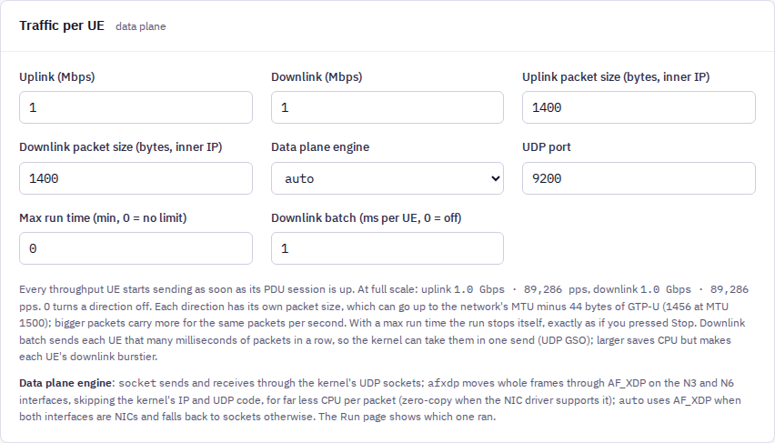
N2 N3 N6 網路欄位與 Ping
- Local interface 是下拉選單，列出所選 tester 所在主機上的網卡（啟用中的排前面，
lo最後，容器的 veth 不列）。網卡有變動時按 Refresh list；設定檔裡的網卡不在這台主機上時標— not on this host；列不出網卡時欄位變回手動輸入。 - Ping：用 run 會用的位址（第一個 gNB 的 IP 加 CIDR 的遮罩；N6 用 sink 和它的遮罩）。主機沒有這個位址就暫時加到卡片設定的網卡上（已有但遮罩不同時暫時換掉），ping 對端 3 次，再恢復原狀。結果是
Reachable、Some replies lost或No reply。只檢查這張卡片自己的欄位。run 進行中不能測；測試中也不能開始 run。
| 欄位 | 範圍／預設 | 意思 | 注意 |
|---|---|---|---|
| N2 · gNB ↔ AMF | |||
| Local interfacenetwork.n2.interface | docker-cn-ran | tester 把每個 gNB 的 N2 IP 加在這張網卡上，SCTP 從這裡連 AMF。 | — |
| gNB IP CIDR / First gNB IPnetwork.n2.cidr / startIp | 10.0.1.0/24 / 10.0.1.100 | 從 First gNB IP 起遞增分給每個 gNB，用 CIDR 的遮罩加上去。跳過網路、廣播、AMF、UPF、sink 與這台主機上已有的 IP。 | CIDR 要裝得下所有 gNB。tester 看不到別台機器、Docker 容器、k8s pod 用掉的 IP（例如 fru-lab 部署的 gNB 容器 10.0.1.2），起始 IP 要從遠一點開始。 |
| AMF IP / AMF portnetwork.n2.amfIp / amfPort | 10.0.1.3 / 38412 | AMF 的 NGAP 位址。 | — |
| N3 · gNB ↔ UPF | |||
| Local interfacenetwork.n3.interface | docker-cn-ran | gNB 的 N3 IP 加在這裡；UL 從這裡送、DL 從這裡收。它的 MTU 決定封包大小上限。 | — |
| gNB IP CIDR / First gNB IPnetwork.n3.cidr / startIp | 10.0.1.0/24 / 10.0.1.100 | 同 N2。N2 和 N3 可以同一個網段，不會分到同一個 IP。 | — |
| UPF IP / UPF portnetwork.n3.upfIp / upfPort | 10.0.1.5 / 2152 | UL 送往的 UPF 位址。PDU 建立時核網有給 UPF 位址就用核網給的。 | — |
| N6 · data network side | |||
| Local interfacenetwork.n6.interface | docker-cn-ran | sink IP 所在、UE pool 路由走的網卡。它的 MTU 也限制封包大小。 | — |
| Sink IP (CIDR)network.n6.sinkIp | IP/遮罩／10.0.1.1/24 | UL 的終點，也是 DL 的來源。主機沒有這個 IP 就照遮罩加到 N6 網卡上，Stop 時移除；已有且遮罩一樣就直接用、不動它；N6 網卡上已有但遮罩不同，先換成設定的，Stop 時換回；別張網卡上已有且遮罩不同，run 失敗並說明。 | 遮罩要涵蓋 UPF N6 IP。只填 IP、或填網段位址（例如 172.26.0.0/16）驗證會擋下。 |
| UPF N6 IPnetwork.n6.upfIp | 10.0.1.5 | DL 的下一跳：run 期間 tester 加一條「UE pool 經由這個 IP」的路由。 | — |
| UE IP poolnetwork.n6.uePool | 10.60.0.0/16 | SMF 發給 UE 的 IP 範圍，要和 SMF 設定一樣。 | 主機上已有一條到這個網段、但閘道不同的路由時，run 失敗並說明。 |
gNB plan、Plan preview 與 Pre-flight checks
- gNB plan（主欄最後一張卡片）：驗證過後才顯示，每個 gNB 一列：#、Name、gNB ID、N2 IP、N3 IP、UEs（數量與 UE 編號範圍，有 CP UE 時標出幾個 control-plane）、SUPIs。每頁 10 個。拿 SUPI 範圍和核網的訂閱資料對照。
- Plan preview：UEs（幾個 UE 在幾個 gNB 上）、Throughput UEs、Control-plane loop UEs、All gNBs up after（gNBs per second 為 0 時顯示
at once）、All registered after、All PDU sessions after、Offered uplink／downlink、Stops after。時間假設核網跟得上；UE 要等它的 gNB up 才能註冊，所以註冊時間不會短於 gNB 全部上線的時間。 - Pre-flight checks：所選 tester 有沒有回應、設定檔驗證有沒有過、N2／N3／N6 的網卡在不在（狀態與 MTU），以及各網路卡片最近一次 Ping 的結果。
D2Run 頁全部數字
Runs 列表與 Run 頁的每個區塊
Runs 列表：側邊欄的 Runs 一律先到列表。每台有 run 的 tester 一張卡片，每 3 秒更新：profile 名稱與 run ID、狀態（Configuring、N2 setup、Running、Cleaning up、Failed）、Registered 與 PDU sessions 進度、Started、Elapsed、Uplink、Downlink、tester 與失敗的 UE 數。stopped 的 run 在 History 看；failed 的會留著顯示錯誤，直到那台開始下一個 run；連不到的 tester 列一張 Unreachable。
| 區塊 | 內容 |
|---|---|
| 標題列 | Run <run ID> 與狀態（例如 Running · Registration）；Tester、Profile、Engine、Started、Elapsed。Stop run（收尾中變 Skip cleanup）。達到最長執行時間而停的標 Stopped at max run time；即時連線斷掉時標 Live updates disconnected，頁面自動重連。 |
| 進度條 | Attach gNBs → Register UEs → PDU sessions → Deregister（Stop 前顯示 on stop）。 |
| 五個數字 | Registered UEs、Registrations/s（上一秒成功的註冊數）、Avg registrations/s（成功數 ÷ 註冊階段到目前的時間）、PDU sessions（目前建立的數量，佔已註冊的比例）、Failures（總數與佔嘗試的比例）。比 fru-tester 舊的版本不送註冊曲線，Registrations/s 顯示 not reported by this tester。 |
| Setup rate | Registrations/s、PDU sessions/s、Failed/s（最後失敗的註冊與 PDU，重試中的不算），從 run 開始記到所有註冊與 PDU 都有結果（或 Stop）。前 10 分鐘每秒一點，之後每點是 2、4、8… 秒的平均。 |
| Data plane throughput 與 Data plane 面板 | UL、DL 各一張圖，各自有刻度。灰虛線是 Sent、實線是 Received。流量開始兩秒後才有圖。面板：UL／DL sent、received、Loss，以及這次 run 用的 DP CPUs、CP CPUs。 |
| Control plane procedures、Failure causes | 見下表。 |
| Data plane details | UL、DL 兩欄的詳細數字，右上角是正在送流量的 UE 數。 |
| Control-plane loop | 有 CP UE 時才出現。狀態 Waiting for the throughput UEs → Running → Stopped；Cycles completed、Registered now、Running for、Registrations · last s / avg、Deregistrations · last s / avg、Failed · last second；每秒圖；Registration、Deregistration 兩列的程序表；CP 自己的 Failure causes。上面的 Registration、PDU 列只算打流量的 UE。 |
| UEs | 依狀態計數：Established、Establishing、Registered、Registering、Pending、Failed、gNB down、Cancelled、Deregistering、Deregistered。有失敗時列出 Failed UEs（最多 200 個）：SUPI、gNB、Stage、Cause、Attempts。 |
| gNBs | #、Name、N2 IP、State、Attempts、Setup time、Registered、PDU sessions、UL／DL received（含掉包比例）、Last error。每頁 50 個；表頭列出各狀態的數量；Show 篩選 All、Not up、Failed or lost。只有目前這一頁會從 tester 傳過來（API：GET /run 和串流接受 gnbOffset、gnbLimit、gnbState）。狀態：pending → connecting → up 或 failed；lost 表示原本 up、被 AMF 那邊斷掉；收尾後是 closed。 |
控制面程序：每一欄的定義與計時範圍
一列一個階段：N2 setup（每個 gNB）、Registration、PDU session establishment、Deregistration（每個 UE）。Stop 後多出收尾的列：有 CP UE 時 Deregistration 分成 (throughput UEs) 和 (control-plane UEs)，最後是 gNB SCTP close。表上直接列 Attempts、Accepted、Rejected、Timed out、Conn. errors、In flight、Average、p95、p99；Retries、not started、max、total time 在滑鼠移到那一列時顯示。
| 數字 | 意思 |
|---|---|
| Accepted | 成功的數量 |
| Rejected | 核網拒絕：NGSetupFailure（misc(4)）、Registration Reject（5gmm(N)）、PDU Session Establishment Reject（5gsm(N)） |
| Timed out | 逾時沒有回應。operation now in progress 代表 SCTP 連線本身沒有回應 |
| Conn. errors | 本機或傳輸錯誤，例如 connection refused、association lost |
| In flight | 此刻正在等核網回應的數量 |
| Retries | 額外的嘗試次數 |
| Not started | 沒有嘗試過：它的 gNB 沒起來、前一段失敗、或 run 先被停了 |
| Total time | 從第一個嘗試開始到最後一個結束 |
| Average、p95、p99、Max | 成功的耗時，從第一次嘗試算起，所以重試的時間也算在內 |
| 階段 | 從 | 到 |
|---|---|---|
| N2 setup | SCTP 連線 | 收到 NG Setup Response |
| Registration | 送出 Initial UE Message（Registration Request） | 送出 Registration Complete |
| PDU session establishment | 送出 PDU Session Establishment Request | 收到 Accept（gNB 已回覆 PDU Session Resource Setup） |
| Deregistration | 送出 Deregistration Request | 收到 Deregistration Accept |
| gNB SCTP close | 開始關閉 | 關閉完成（最多約 1 秒） |
- 收尾的 not started 包含：沒註冊成功的 UE、association 已斷的 UE 和 gNB、Skip cleanup 時還在排隊的 Dereg。Skip cleanup 時已送出的 Dereg 記為 Conn. errors，原因
cleanup skipped。這些 UE 最後是 Cancelled；PDU 失敗的 UE 維持 Failed。 - CP UE 的收尾：Stop 時還註冊著的做 Dereg，正在兩輪之間的記為 not started。和打流量的 UE 用同一組 Deregistration pacing。
資料面：Engine 字串與每一列的定義
- Engine：
socket；socket (auto: …)表示選了 auto 但改用 socket，括號裡是原因，例如bond0 is a bond, not a NIC；af_xdp (ens1f0 zero-copy, 24 queues; …)列出每張網卡的模式（zero-copy 最快；copy mode 要複製；generic mode 表示驅動不支援原生 XDP，最慢）與佇列數。 - Sent／Received：最近一秒的速率與 pps。Received 就是 UPF 實際轉送的速率。
- Total sent / received：總量，算內層 IP 封包，單位是 bits。
- Loss：到目前為止的
1 − received ÷ sent。 - Latency p50 / p99：單向延遲，收送用同一台主機的時鐘。
- Out of order、Send errors（本機 socket 拒絕送出的封包）。
- Misrouted：DL 從別的 UE 的隧道或別的 gNB 回來，不算收到。
- 每個封包帶一個小標頭（UE、序號、送出時間），UPF 做了 NAT 也認得出是哪個 UE；上一次 run 殘留的封包會被忽略。凡是 UL、DL 並列的地方，UL 都在前。
D3History、報告與 Bench
History 與報告
- fru-lab 保存所有 tester 最近 50 個已結束的 run。fru-tester 自己只保留最近 10 個；fru-lab 關著時某台 tester 結束了超過 10 個，較舊的不會進到 History。
- 欄位：Started、Run、Profile、Tester（存檔當下的
testerName）、Result、Report、Duration、gNBs / UEs、Registration（成功率）、Registration p95、PDU session、Deregistration、UL／DL received（總量與平均速率）、Loss UL / DL。 - 篩選：Search run name, ID or profile、All testers、All results（Max run time、Failed、Stopped）。
- 改名：Run 欄的鉛筆。名稱最多 80 字，前後空白會去掉；空白或填回 run ID 等於取消改名。名稱存在 fru-lab 的資料庫裡，報告的標題和開頭也會顯示；下載檔名仍用 run ID。API：
PATCH /api/tester/history/{id}，body{"name": "..."}。 - 刪除：勾選後按 Delete n selected，確認後刪除。fru-lab 會記住刪過的 run（最多記 1000 筆），所以 tester 上還保留的那 10 個不會在下次輪詢時又被抓回來。API：
DELETE /api/tester/history，body{"ids": [...]}。 - 加入多台 tester 之前存的 run 當成預設 tester 的。兩台在同一秒開始的 run，run ID 一樣，兩筆都會保留。
- 報告內容：結果、時間、引擎、CPU 分配；UL／DL 吞吐圖；Control plane（Registrations · average、PDU sessions · average、Setup rate 圖、每個階段的成功／拒絕／逾時／重試與耗時分佈、失敗原因）；資料面收送量、掉包、亂序、送出錯誤、單向延遲；Control-plane loop；每個 gNB；UE 狀態與失敗的 UE；完整設定（K、OPc 縮短顯示）。最下面 Download raw data (JSON)。
- 報告與 History 的平均速率是「收到的量 ÷ 流量時間」，流量時間從第一個 UE 開始打流量算起，不含 N2、註冊、PDU 建立和收尾。
Bench：量 tester 主機能送多快
不經過核網：上行封包經 loopback 送到一個不讀取的 socket，依序用 1、2、4… 條發送線，最多到每顆 CPU 一條。結果是這台主機上任何 run 的發送上限。
- Tester：要量哪一台，選擇記在網址的
?tester=。量測中不能切換。 - Packet size (inner IP)（64–9000）：改大小時 pps 幾乎不變、Gbps 等比例變，證明成本在「每個封包」。
- Seconds per step（1–30）：每一階量幾秒。UDP GSO：關掉就是一次一個封包（sendmmsg）。
- 結果：One sender、Best、Peak packets/s、Scaling at best、Send errors；Throughput vs senders 圖（實線 Measured，虛線 Linear）與 Measurements 表。Scaling = n 條線的 pps ÷ (1 條線的 pps × n)，線越多越低是正常的。同一台 tester 上 Bench 和 run 不能同時跑。
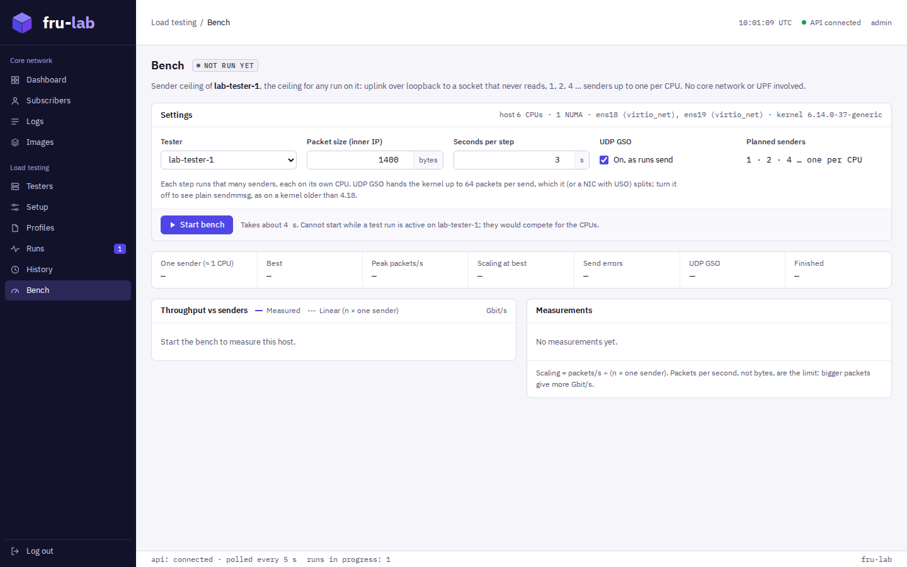
Testers 頁與單台 tester 頁的欄位
- Fleet 表：Name、URL、Status（
Connected · 延遲、Unreachable）、Host、Kernel、Version、CPUs usable、CPU busy、DP CPUs、Load 1 / 5 / 15、Memory used / total、Uptime、Run、Actions。表頭寫著幾台、幾台 reachable、幾台 running、隔離了幾顆 DP CPU。舊網址/tester/system會自動轉過來。 - Tester 面板：連線狀態與回應時間、Host、Build（git revision）、Uptime、Kernel、Go。連不到時整頁只剩這張並自動重試。
- Run 面板：目前或上一次 run；Open this tester's run。
- Ready to run：
SCTP、NET_ADMIN、BPF、IPC_LOCK；結論AF_XDP ready、Sockets only或Not ready。 - Memory：Host 已用／總量、fru-tester 常駐記憶體；在 container 裡且有上限時多一條 Container limit，超過會被 OOM kill。
- CPU：All CPUs busy、load average、Usable、目前存的 CP／DP 分配。
D4大規模（上萬 gNB、百萬 UE）
以 6 000 000 UE、10 000 gNB 為目標整理，還沒有在真實核網上跑到 6 M。記憶體數字是在 tester 內建的假 AMF 上量的。
| 項目 | 估算與建議 |
|---|---|
| tester 記憶體 | 每個 UE 約 2 KB；打流量的 UE 再多約 0.5 KB。6 M UE 約 12–15 GB，主機建議 ≥ 32 GB。每個 gNB 另有 64 KB 讀取緩衝，10 000 個約 640 MB。 |
| 時間 | 註冊時間由核網決定。6 M UE 以每秒 1000 個約 1 小時 40 分；用預設的每秒 50 個約 33 小時。看 Plan preview。 |
| N2 步調 | gNBs per second 0、Max in flight 0（= 1000）時，最多 1000 個 gNB 同時在建連線。AMF 吃不消就設 gNBs per second。 |
| 核網：UE pool | SMF 的 UE pool 至少 /9 才裝得下 6 M UE（/16 只有約 65 000 個位址）。 |
| 核網：UPF | UPF（gtp5g）要放得下數百萬筆 PDR／FAR。 |
| 訂閱資料 | Subscribers 頁一次最多 10 000 個，6 M 個要用別的方式匯入核網。 |
| 流量 | 把 Throughput UEs 設小，或每 UE 的 Mbps 設低，其餘 UE 只做註冊或控制面測試。 |
| 看結果 | gNB 表分頁、只傳目前那一頁；用 Show 的 Not up 或 Failed or lost 找有問題的 gNB。 |
排錯
先看 run 卡在哪一關，再到對照表找症狀。
E1卡在哪一關
Run 頁的進度條停在哪一段，就從那一段的卡片查起。
modprobe sctp、AMF 的 ngapIpList、gNB 太多同時連。cgf.enable、DNN、核網重開順序。urrThreshold、CPU 與分流。E2症狀對照表
| 症狀 | 先檢查 |
|---|---|
| 網路與連線 | |
| 不確定網路有沒有設對 | Setup 頁 N2、N3、N6 卡片的 Ping 按鈕，不用開始 run。 |
| N2 一直逾時 | 有沒有 modprobe sctp；AMF 的 ngapIpList；tcpdump -ni <N2 網卡> sctp 有沒有 INIT 出去、INIT ACK 回來；兩台時先 ping AMF。 |
| gNB 很多時 N2 很慢或大量逾時 | AMF 同時收到太多 NG Setup：設 gNBs per second，或調低 Max in flight。 |
gNB 原本 up，後來全部 lost，PDU／登出出現 association lost | AMF 那邊斷了連線：AMF 有沒有重啟、AMF 太忙沒回 SCTP（Last error 是 connection timed out）、網路有沒有中斷。在 tester 主機看 /proc/net/sctp/snmp 的 T3 重傳與 Aborteds；兩端同時 tcpdump 看 SCTP 封包有沒有到。 |
| 註冊與 PDU | |
Registration 失敗 5gmm(N) | 訂閱資料（IMSI 範圍、K、OPc、SQN）；PLMN、TAC、切片和 AMF 設定一致。5gmm(62) 是切片不對。 |
| 註冊都成功，但每個 PDU 都逾時 | SMF log 裡有沒有 CHF 計費逾時（cgf.enable）；SMF 與 UPF 的 PFCP 有沒有連上；重開順序。 |
重跑同一批 UE 出現 Duplicated PDU session ID | 上次收尾被略過，UE 還留在核網裡。重開核網。 |
| 流量 | |
| PDU 成功但 UL Received 是 0 | UPF 往 sink 的路由（在 UPF 裡 ip route get <sink IP>）；tcpdump -ni <N6 網卡> udp port 9200。 |
| PDU 成功但 DL Received 是 0 或一直斷 | tester 主機上 ip route get <UE IP> 要經 UPF N6 IP；UPF 往 gNB N3 的路由；SMF 的 urrThreshold。 |
| Misrouted 不為 0 | UPF 把 DL 送到錯的隧道或錯的 gNB，是 UPF 的轉送問題。 |
| UL 掉包、高速率時一陣一陣 | cat /proc/net/softnet_stat 第 2 欄、nstat -az | grep UdpRcvbufErrors；同一台時降每 UE 速率、加 UE、調大 sysctl -w net.core.netdev_max_backlog=10000。 |
| CPU 很高但吞吐上不去 | sudo perf record -a -g -- sleep 10，再 perf report --sort dso；[gtp5g] 大就是 UPF 本身的上限。 |
Engine 是 socket (auto: …)，想要 AF_XDP | 看括號裡的原因：不是實體網卡就換網卡或用 VF；開不起來就看 Ready to run 有沒有 BPF、IPC_LOCK。 |
| run 一開始就失敗 | |
| already routed | 主機上已有一條到 UE pool、閘道不同的路由，先 ip route del。 |
| 加路由失敗 | UPF N6 IP 不在任何直連網段：Sink IP 的遮罩要涵蓋 UPF N6 IP。 |
| Setup 說 packet size 太大 | 上限是 N3 網卡 MTU − 44 和 N6 網卡 MTU；調小封包或兩台一起調大 MTU。 |
AF_XDP run 失敗：key too big for map | 舊版 fru-tester 的 XDP 表固定 4096 筆。更新 fru-tester。 |
上萬個 gNB 時崩潰：thread exhaustion | 舊版 fru-tester 每個 gNB 佔一條執行緒。更新 fru-tester；Max in flight 不要超過 1000。 |
| tester 被 OOM kill、run 中斷 | Testers 頁的 Memory 面板看 Container limit；記憶體估算見「大規模」。 |
E3已知限制
目前的限制與行為 工程
- bond 上沒有 AF_XDP：
auto只在實體網卡上用 AF_XDP，bond 會改用 socket。要 AF_XDP 時 N3、N6 改用沒有綁 bond 的網卡。 - N2 同時建連線最多 1000 個：建 SCTP 連線時每個 gNB 佔一條系統執行緒。連上之後經 Go 的 poller 讀寫，閒著的 gNB 不佔執行緒。連線過程被訊號打斷（EINTR）時會自動重試。
- fru-tester 被 SIGKILL 時，它加的 gNB IP 會留在網卡上；之後的 run 會把它們當主機 IP 跳過，用
ip addr del清掉。 - NG Setup 之後 AMF 送來的訊息只讀不處理。
- 流量在每個 PDU 建好後固定 500 ms 才開始；裝隧道比較慢的核網，每個 UE 開頭可能掉幾個 DL 封包。
- 重開 free5GC 的容器時，NRF 要先重開，SMF 要在 UPF 之後；否則 SMF 失去 PFCP 關聯，每個 PDU 都會逾時。
- gNB 後來變成 lost 時，它底下已經 established 的 UE 仍算 established。
- UDP GRO 只在封包合併後才到時有用（例如實體網卡的 GRO）。Docker 的 veth 預設不做 GRO，結果一樣正確。